The general approach first, then each part of the exam in the order you do it: what to look for, each manoeuvre grouped under what it tests (numbered steps and what counts as positive), and its pearls. Built from the course objectives and the PoM 2 Neurology lectures; anything only the PoM 2 Neurology session teaches is tagged later. For the dermatomes and myotomes drawn on a body, see the body map.
Look: everything shown. Pick a region below to jump to it.
Mental status → Cranial nerves → Motor → Sensory → Reflexes → Coordination → Gait
Compare left with right, and near the trunk with far. Every finding answers one question: where is the lesion, and is it an upper or a lower motor neuron problem?
General approach
Every neuro exam
The general approach
Say it first (TOSCE, Teaching Objective Structured Clinical Exam): "Hi, I'm [name], a medical student. I'd like to examine your nervous system: I'll test your eyes and face, the strength, feeling and reflexes in your arms and legs, your coordination and your walking. Is that all right? Tell me if anything is uncomfortable."
Prepare: introduce yourself, check the patient's identity (wristband and chart), get consent, privacy, clean your hands before and after contact, warm hands and instruments, personal protective equipment (PPE) as needed
Equipment: penlight, eye chart, ophthalmoscope, cotton wisp, tuning forks (128 Hz for vibration, 512 Hz for hearing), reflex hammer, a sharp and a dull object
Explain each step in plain words and demonstrate on an area you are not testing
Order: mental status → cranial nerves → motor → sensory → reflexes → coordination → gait
Compare sides, and proximal (near the trunk) with distal (far)
Tap to reveal
Mental status
PPES 2 · Weeks 8–9 · 1 manoeuvres
What to look for
Before the manoeuvres
Appearance and conduct: dress, grooming, hygiene, posture, behaviour, any involuntary movements or obvious paralysis
While interviewing, screen orientation, memory and judgment
level of consciousness and orientation: alert? oriented to person, place and time?
attention: can they focus, answer questions and follow directions?
mood and affect: voice, facial expression, demeanour; ask how their mood has been
speech and language: clarity, amount, rate, fluency, comprehension, reading and writing
thought content: perceptions, judgment, memory
Folstein Mini-Mental State Exam (MMSE): perform, score and interpret later: PoM 2 Neurology: not in her OneNote or the upper-year notes; use the session's own form
Types of dysphasia (aphasia)later: PoM 2 Neurology: aphasia is a problem with language, not with moving the mouth (that is dysarthria); language lives in the dominant hemisphere (usually the left)
expressive (Broca's): inferior frontal lobe · slow, halting, effortful speech, few words or none · understanding intact · usually aware of the problem
receptive (Wernicke's): posterior temporal lobe · fluent speech that does not make sense · poor understanding · often unaware of the problem
global: full MCA territory · no verbal output, understanding lost
conduction (arcuate fasciculus) extra: understands and can speak, but cannot repeat
Types of parietal lobe syndromelater: PoM 2 Neurology:
non-dominant (right) parietal: neglect: ignores one side of space (visual neglect) or of the body (sensory neglect) · does not recognize their own limb (asomatognosia) · denies the deficit (anosognosia) · trouble dressing (dressing apraxia)
apraxia: cannot carry out a movement on command (cannot pretend to use a hammer, form a hand posture, whistle or draw) despite normal power
cortical sensory loss (see section 5): primary sensation intact but stereognosis or graphesthesia lost
To say: "Alert and oriented, attentive, speech fluent at a normal rate and rhythm, no involuntary movements; mood good, affect appropriate."
Tap to reveal
Language
Language (aphasia screen)
Types of dysphasia later: PoM 2 Neurology
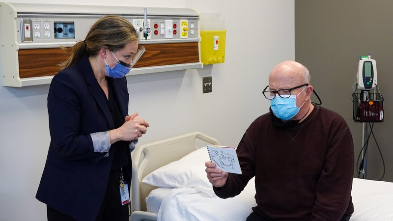
Steps
Fluency: listen to their speech in answer to an open question
Comprehension: a 3-step command ("Take this paper, fold it in half, put it on the floor")
Naming: a pen, a watch, then their parts (the cap, the face)
Repetition: "No ifs, ands or buts"
Reading and writing: read a sentence aloud; write any sentence
Positive
Halting speech, understanding intact = expressive (Broca's) · fluent nonsense, poor understanding = receptive (Wernicke's) · everything lost = global · all normal but slurred = dysarthria, not aphasia (normal: fluent, follows commands, names, repeats)
Tap to reveal
Cranial nerves
PPES 2 · Weeks 8–9 · 17 manoeuvres
What to look for
Before the manoeuvres
Examine cranial nerves I to XII in an organized, logical orderlater: PoM 2 Neurology; PPES 2 starts at II
The eye, ear, mouth and face tests are the same moves as the head and neck exam
Look at the face and eyes at rest first: symmetry, drooping lid, pupil size
Tap to reveal
Smell and hearing (I, VIII)
CN I, olfactory: smell
Loss of smell later: PoM 2 Neurology
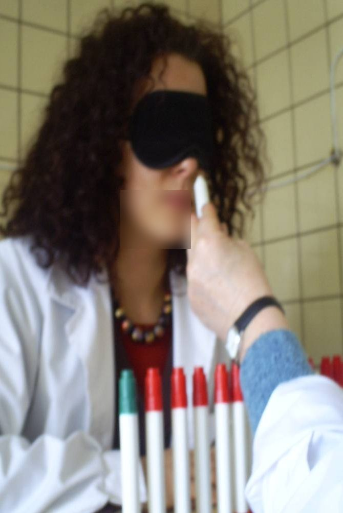
Steps
Patient closes the eyes and blocks one nostril
Offer a familiar, non-irritating smell (coffee, soap)
Ask them to name it
Repeat on the other nostril
Positive
Cannot smell or identify it, one side or both (normal: identifies it each side)
Tap to reveal
CN VIII, vestibulocochlear: hearing
Hearing
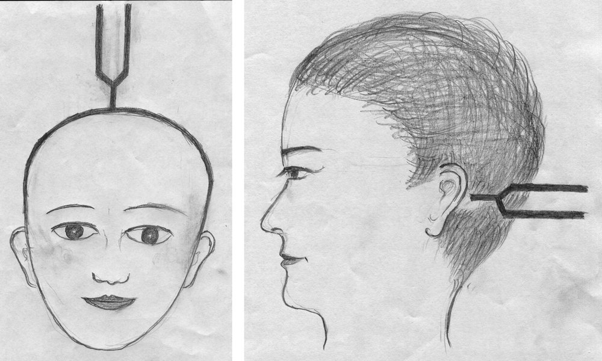
Steps
Block one ear; whisper numbers or rub your fingers by the other, out of sight
If abnormal: Weber (512 Hz fork on top of the head) and Rinne (fork on the mastoid, then beside the ear)
Positive
Weber louder in the bad ear and Rinne bone louder than air = conductive · Weber louder in the good ear = sensorineural (normal: hears whisper; Weber central; Rinne air louder than bone)
Tap to reveal
The eye (II, III, IV, VI)
CN II, optic: visual acuity
Visual acuity
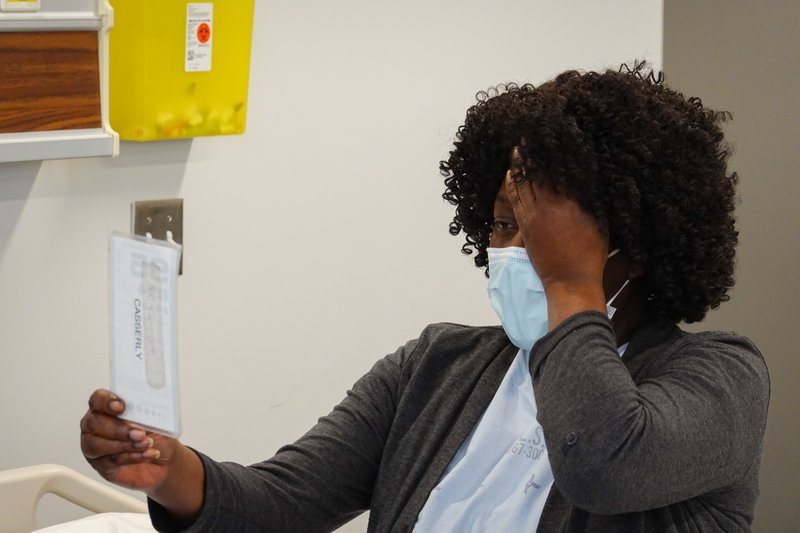
Steps
Distance glasses on (note them)
Cover one eye; read the smallest line they can on the chart
Repeat with the other eye
Positive
Reduced acuity in one or both eyes (normal: 20/20)
Tap to reveal
CN II: visual fields by confrontation
Visual fields
Steps
Eye level, about an arm's length apart
Patient covers one eye, you close your opposite eye; they look at your nose
Bring a finger in from the edge in all four quadrants (or hold up fingers to count)
Repeat for the other eye
Positive
Missed quadrant or field, or a blind spot (scotoma) (normal: sees the finger when you do)
Tap to reveal
CN II and III: pupillary light reflex
Pupillary light reflex (II carries light in, III constricts the pupil)
Steps
Note pupil size, shape, symmetry
Patient looks into the distance
Light into one eye: watch direct and consensual constriction
Repeat on the other eye
Near reaction: follow your finger in toward the nose
Positive
Unequal, irregular, sluggish or absent response (normal: PERRLA, pupils equal, round, reactive to light and accommodation)
Both pupils dilate when the light swings onto one eye = RAPD in that eye (optic nerve, e.g. optic neuritis) (normal: both stay constricted)
Tap to reveal
CN II: fundoscopy
Optic disc and retina
Steps
Dim the room, ophthalmoscope dial at 0
Approach from about 15° to the side; see the red reflex
Follow a vessel to the optic disc
Note disc margins, colour, cup-to-disc ratio, then vessels, retina and macula
Positive
Swollen disc with blurred margins (papilledema), haemorrhages (normal: sharp margins, pale pink to yellow disc, cup less than half the disc, veins larger and darker than arteries)
Tap to reveal
CN III, IV, VI: eye movements
Extraocular movement
Steps
Finger 45–60 cm away; head still, eyes follow
Trace an "H"
Ask about double vision
Watch for nystagmus at the ends
Positive
Restricted movement, double vision, misalignment or nystagmus (normal: full movement, no diplopia)
Tap to reveal
The face (V, VII)
CN V, trigeminal: sensation
Sensory function of the face
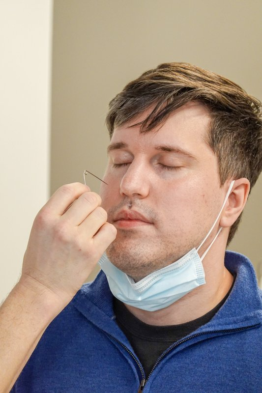
Steps
Patient closes the eyes
Touch a cotton wisp to the forehead (V1), cheek (V2) and chin (V3) on each side
Ask whether each side feels the same
Positive
Reduced or absent feeling in one branch or one side (normal: equal on both sides)
Tap to reveal
CN V: motor
Motor function (muscles of chewing)
Steps
Feel the temporalis (temple) and masseter (jaw angle) on both sides
Patient clenches the teeth
Positive
Weak or uneven contraction, wasting (normal: strong and equal)
Tap to reveal
CN V and VII: corneal reflex
The V and VII reflex: V carries the touch in, VII closes the eye
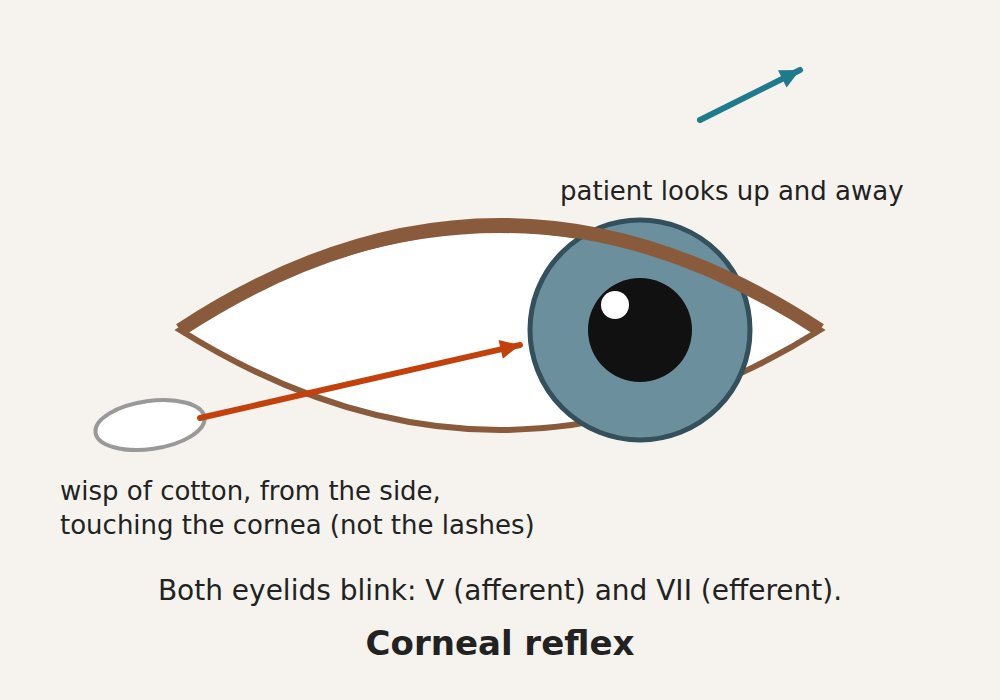
Steps
Usually offered rather than done in a teaching station: patient looks up and away
Come in from the side, out of view
Lightly touch the cornea with a cotton wisp
Repeat on the other eye
Positive
No blink (normal: both eyes blink)
Tap to reveal
CN VII, facial: motor
Motor function of facial expression
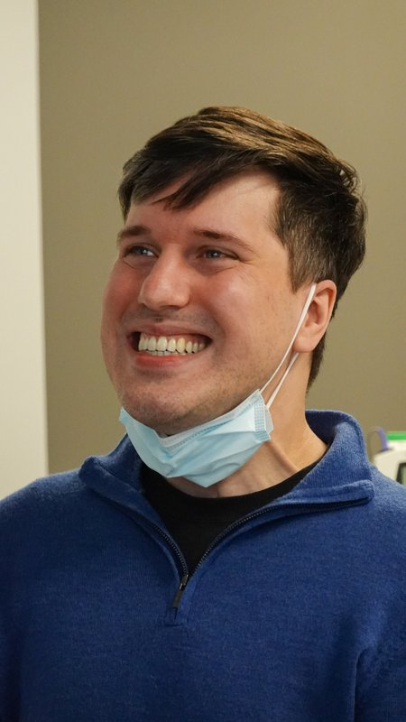
Steps
Raise the eyebrows
Close the eyes tightly against your attempt to open them
Smile, bare the teeth
Puff out the cheeks
Positive
One side weak: whole side = lower motor neuron (for example Bell's palsy); lower face on the opposite side only, forehead spared = upper motor neuron (for example stroke) (normal: symmetric, strong)
Tap to reveal
CN VII: sensory
Sensory function: taste, front two-thirds of the tongue
Steps
Ask about any change in taste
Positive
Taste loss on one side of the front of the tongue
Tap to reveal
Throat, neck and tongue (IX–XII)
CN IX and X: palate
Motor function
Steps
Listen to the voice and ask about swallowing
Patient says "ahh"
Watch the soft palate and uvula
Positive
Palate rises on one side only, uvula pulled to one side; hoarse voice (normal: symmetric rise, uvula midline)
Tap to reveal
CN IX and X: gag reflex
Gag reflex
Steps
Usually offered rather than done in a teaching station: tell the patient first
Lightly touch the back of the throat on each side with a tongue depressor
Positive
No gag on one side or both (normal: gag on each side); not done routinely, mostly to check airway protection or the brainstem
Tap to reveal
CN XI, spinal accessory
Motor function of the trapezius and sternocleidomastoid
Steps
Look for wasting or asymmetry of the neck and shoulders
Shrug against your resistance
Turn the head to each side against your hand
Positive
Weakness or wasting on one side (normal: strong, equal)
Tap to reveal
CN XII, hypoglossal
Motor function of the tongue
Steps
Look at the tongue resting in the mouth: wasting, fasciculations
Stick the tongue straight out
Move it side to side; push it into each cheek against your finger
The gag and corneal reflexes are in the course objectives but are not done on every patient; know how and why.
To say: "Cranial nerves II to XII are intact."
Tap to reveal
Motor
PPES 2 · Weeks 8–9 · 12 manoeuvres
What to look for
Before the manoeuvres
Watch movements first: smooth movement, normal rate and rhythm, no tremor
Muscle bulk: inspect for atrophy (wasting), hypertrophy and asymmetry
fasciculationslater: PoM 2 Neurology: small, spontaneous twitches of part of a muscle, a lower motor neuron sign
Muscle tone: the resistance you feel when you move a relaxed limb yourself
patient goes floppy; move the limb passively (wrist, elbow, knee) slowly, then quickly
normal, reduced (hypotonia, floppy), or increased (hypertonia: spastic or rigid)
spasticity vs rigiditylater: PoM 2 Neurology:
spasticity (upper motor neuron): resistance depends on speed (worse the faster you move); clasp-knife: resistance builds, then suddenly gives way
rigidity (basal ganglia, for example Parkinson disease): resistance the same at any speed, from tightening of opposing muscles together; lead-pipe = smooth and even throughout · cogwheel = jerky, ratchet-like; it gets more obvious when the patient moves the other hand (augmentation)
Muscle power: test one side at a time and compare; against gravity, then against full resistance, graded out of 5
Power grading, Medical Research Council (MRC) scale; naming the root and nerve for each movement (myotomes) is later: PoM 2 Neurology:
0 no movement
1 a flicker of contraction
2 moves with gravity eliminated
3 moves against gravity, no added resistance
4 against some resistance (4−, 4, 4+ show how much)
5 full power
Tap to reveal
Arm power (C5–T1)
Pronator drift
Subtle upper motor neuron weakness of the arm later: PoM 2 Neurology
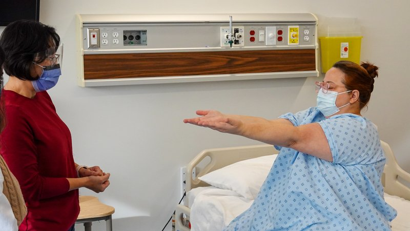
Steps
Arms straight out in front, palms up
Eyes closed
Hold for about 20–30 seconds
Watch each arm
Positive
One arm turns palm-down (pronates) and drifts down = upper motor neuron weakness on that side (normal: both arms stay level, palms up)
Upper vs lower motor neuron lesionlater: PoM 2 Neurology:
upper motor neuron (brain or spinal cord): weakness in a pyramidal pattern (arm extensors and leg flexors weaker), increased tone (spasticity), brisk reflexes, clonus (repeated rhythmic beats), upgoing toe (Babinski sign), little wasting, no fasciculations
lower motor neuron (anterior horn cell, root, nerve): wasting, fasciculations, reduced tone (flaccid), reduced or absent reflexes, toe down or no response
just after a sudden upper motor neuron lesion (stroke, cord injury) the limb can be floppy at first, with spasticity developing over the following days to a week
To say: "Bulk and tone are normal; power is 5 out of 5 throughout."
Tap to reveal
Sensory
PPES 2 · Weeks 8–9 · 9 manoeuvres
What to look for
Before the manoeuvres
Explain and demonstrate on a normal area first (for example the forehead), then test with the patient's eyes closed
Ask "Does this feel the same as this?" side to side and distal to proximal; it is the pattern of loss that localizes
Two pathways, two sets of modalitieslater: PoM 2 Neurology:
spinothalamic tract: pain and temperature (and crude touch); fibres cross within a level or two of entering the cord
dorsal (posterior) columns: vibration and joint position (proprioception) (and fine touch); fibres stay on the same side until the brainstem
Posterior column vs spinothalamic lesionslater: PoM 2 Neurology:
posterior cord lesion: lost vibration and proprioception, pain and temperature kept (for example vitamin B12 deficiency, syphilis (tabes dorsalis)); positive Romberg (section 8)
anterior cord lesion: lost pain and temperature and power below the level, vibration and proprioception kept
central cord: pain and temperature lost in a band ("suspended"), hands weaker than shoulders
half the cord (Brown-Séquard): same side weakness and lost vibration and proprioception · opposite side lost pain and temperature
a sensory level (normal above a line, reduced below) points to the spinal cord
Key dermatomeslater: PoM 2 Neurology: C5 lateral shoulder and arm · C6 thumb and index finger · C7 middle finger · C8 ring and little finger · T1 medial arm · T10 umbilicus · L4 medial leg · L5 lateral leg and top of the foot · S1 lateral foot and sole
Test cortical sensation only once primary sensation is intact: a primary loss cannot be pinned to the cortex
Tap to reveal
Pain and temperature (spinothalamic)
Pain (pinprick)
Pain (spinothalamic)
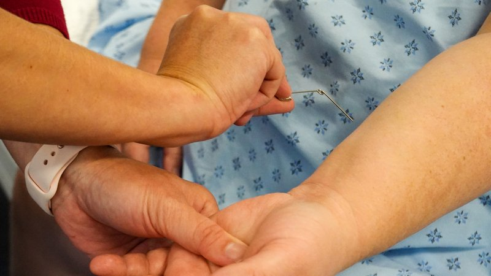
Steps
Use a clean sharp object and a dull one
Patient says "sharp" or "dull"
Compare sides and distal with proximal
Positive
Cannot tell sharp, or feels it less, in a pattern (normal: equal, correct each time)
Tap to reveal
Temperature
Temperature (spinothalamic)
Steps
Touch the skin with a cool tuning fork
Ask "hot or cold?" and "is it the same as here?"
Positive
Reduced or absent sense of cold
Tap to reveal
Light touch
Light touch
Light touch
Steps
Cotton wisp, no pressure
Patient says "yes" each time they feel it
Compare areas
Positive
Missed touches in a pattern
Tap to reveal
Vibration and position (dorsal columns)
Vibration
Vibration (dorsal columns)
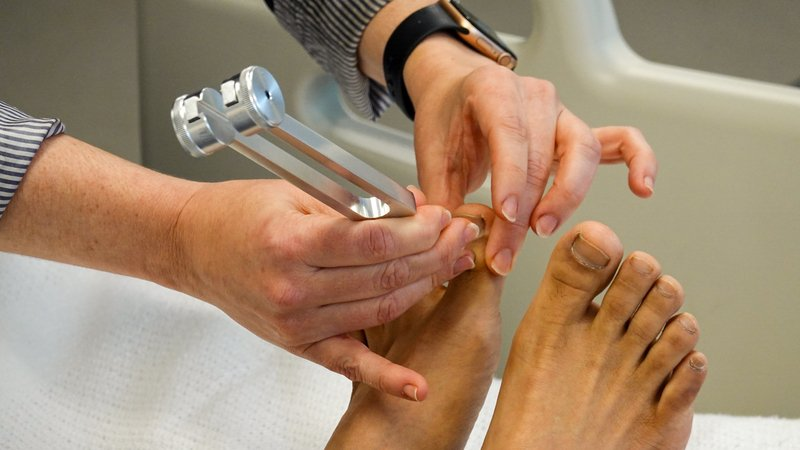
Steps
Strike a 128 Hz fork; show it on the forehead
Place it on the last joint of the index finger (your finger underneath) and the big toe joint
Patient says when they feel it and when it stops
If lost, move up to the next bony point (start distally, move proximally)
Positive
Feels it stop early, or not at all, usually at the toes first (normal: feels it until you do)
Tap to reveal
Proprioception (joint position)
Proprioception (dorsal columns)
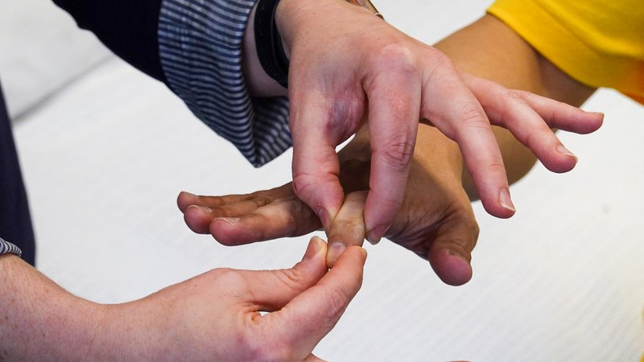
Steps
Hold the end of the finger or big toe by its sides
Show "up" and "down"
Eyes closed: move it up or down in a random order
Positive
Wrong answers (normal: correct each time)
Tap to reveal
Cortical sensation
Stereognosis
Cortical sensation
Steps
Eyes closed
Put a familiar object (coin, key) in the hand
Ask them to name it
Positive
Cannot name it although primary sensation is intact → parietal (sensory cortex)
Tap to reveal
Graphesthesia
Cortical sensation
Steps
Eyes closed
Draw a number on the palm with a blunt tip
Ask them to name it
Positive
Cannot name it although primary sensation is intact → parietal (sensory cortex)
Visual version: wiggle fingers in both fields at once
Positive
Feels each side alone but misses one side when both are touched together → parietal (visual extinction → occipital) (normal: "both")
Tap to reveal
Two-point discrimination
Cortical sensation (fine touch) extra
Steps
Eyes closed
Touch the fingertip with one or two points of an opened paper clip
Ask "one or two?"
Narrow the gap until they cannot tell
Positive
Needs a wider gap than the other side (normal fingertip: about 2–5 mm)
Tap to reveal
Pearls
Remember
Primary sensory loss (pinprick, temperature, vibration) can come from anywhere along the pathway; only cortical sensory loss with intact primary sensation points to the cortex.
To say: "Primary sensation is intact to light touch, pinprick, temperature, vibration and joint position; stereognosis and graphesthesia are normal."
Tap to reveal
Reflexes
PPES 2 · Weeks 8–9 · 7 manoeuvres
What to look for
Before the manoeuvres
Deep tendon and plantar reflexes, and the nerve roots of each
Patient relaxed with the limb properly positioned; let the hammer swing
Note the grade (amplitude) and symmetry; grade each reflexlater: PoM 2 Neurology: 2+ is normal; brisk reflexes point to an upper motor neuron lesion, reduced or absent to a lower motor neuron lesion. The full grading scale is not in her OneNote or the upper-year notes: use the session's own scale.
Reinforcement if a reflex will not come: arms: clench the teeth (or spell a word backwards) · legs: hook the hands together and pull them apart, then tap
Tap to reveal
Arm reflexes
Biceps
C5–C6 (mainly C5)
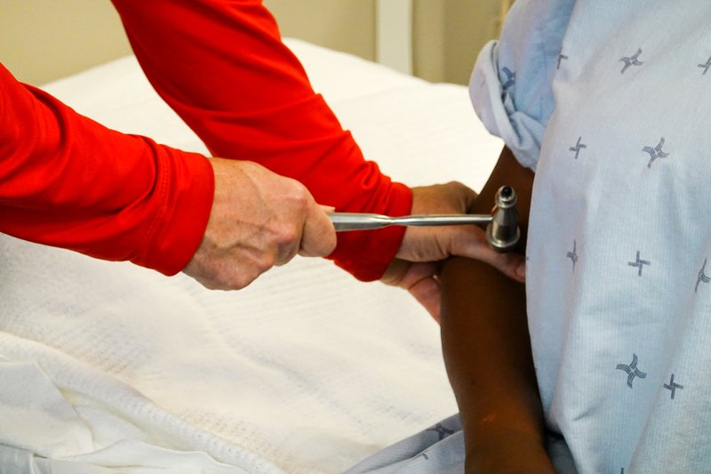
Steps
Arm relaxed, elbow bent
Thumb on the biceps tendon in the elbow crease
Tap your thumb
Positive
Absent, reduced, very brisk or unequal (normal: elbow flexes, equal both sides)
Tap to reveal
Brachioradialis
C5–C6 (mainly C6)
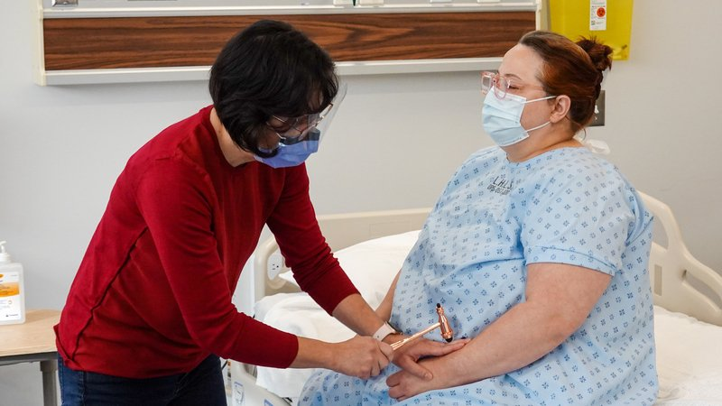
Steps
Forearm resting, thumb up
Tap the thumb side of the forearm, a few centimetres above the wrist
Positive
Absent, reduced, very brisk or unequal (normal: forearm flexes and turns slightly)
Tap to reveal
Triceps
C6–C7 (mainly C7)
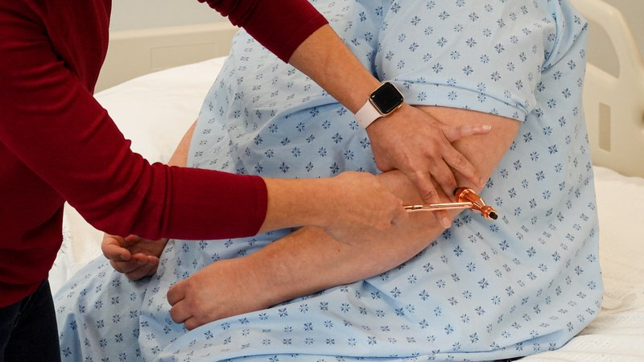
Steps
Arm across the body or hanging, elbow bent
Tap the triceps tendon just above the point of the elbow
Positive
Absent, reduced, very brisk or unequal (normal: elbow extends)
Tap to reveal
Leg reflexes
Knee (patellar)
L2–L4 (mainly L4)
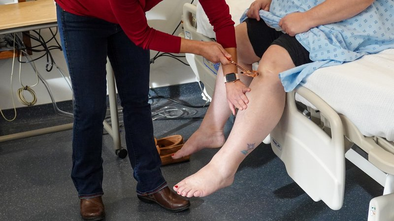
Steps
Patient seated, legs dangling (or knees supported)
Tap the tendon just below the kneecap
Positive
Absent, reduced, very brisk or unequal (normal: knee extends)
Tap to reveal
Ankle (Achilles)
S1–S2 (mainly S1)
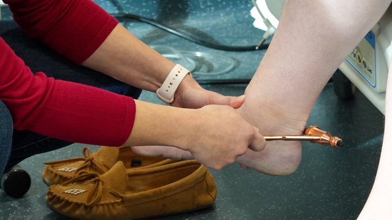
Steps
Foot gently pushed up (dorsiflexed)
Tap the Achilles tendon above the heel
Positive
Absent, reduced, very brisk or unequal (normal: foot plantar flexes)
Tap to reveal
Upper motor neuron sign
Plantar response
L5–S1, upper motor neuron sign (not a tendon reflex)
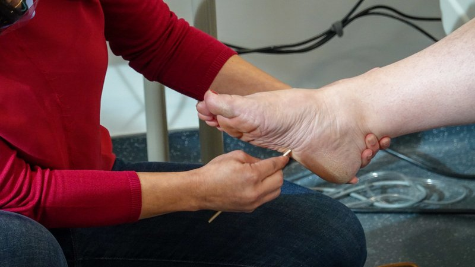
Steps
With a blunt point, stroke the outer edge of the sole from the heel toward the toes
Then across the ball of the foot
Positive
Big toe goes up and the other toes fan out (Babinski sign) = upper motor neuron lesion (normal: toes curl down)
Tap to reveal
Ankle clonus
Upper motor neuron sign, when the reflexes are brisk later: PoM 2 Neurology
Steps
Knee slightly bent, supported
Sharply push the foot up (dorsiflex) and hold it there
Count the beats
Positive
Repeated rhythmic beats of the foot (more than a few) = clonus = upper motor neuron lesion (normal: none, or 1–2 beats that stop)
Tap to reveal
Pearls
Remember
To say: "Reflexes are 2+ and symmetrical; plantar responses are flexor (down-going) on both sides."
Tap to reveal
Coordination
PPES 2 · Weeks 8–9 · 3 manoeuvres
What to look for
Before the manoeuvres
Test cerebellar function: also listen to the speech (slurred, irregular) and watch the eye movements (nystagmus)
Cerebellar signs appear on the same side as the lesion
Tap to reveal
Arms
Rapid alternating movements
Cerebellar function: dysdiadochokinesia
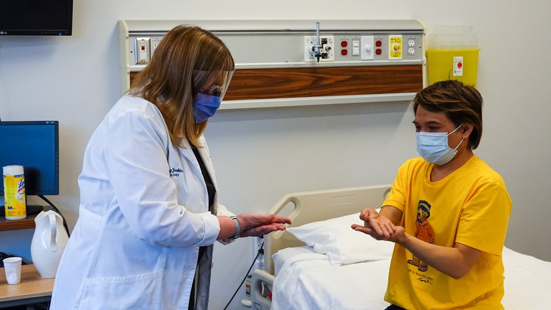
Steps
Hands: patient flips one hand palm up, palm down on the other palm or thigh as fast as they can
Feet: taps the foot on the floor or your hand quickly
Each side in turn
Positive
Slow, clumsy, irregular alternation (dysdiadochokinesia) (normal: fast, even rhythm)
Tap to reveal
Finger-nose
Cerebellar function: dysmetria and intention tremor
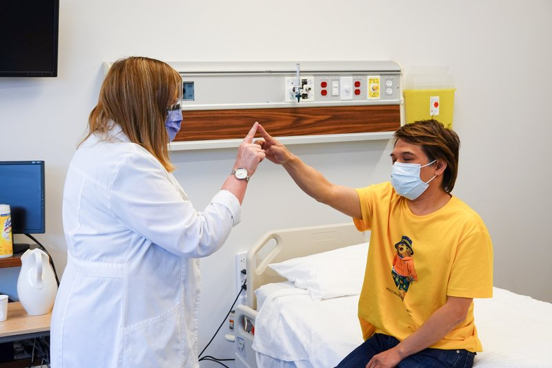
Steps
Hold your finger at arm's length
Patient touches your finger, then their nose, back and forth
Move your finger between touches
Positive
Overshoots or misses (dysmetria), tremor worse near the target (intention tremor) (normal: smooth and accurate)
Tap to reveal
Legs
Heel-shin
Cerebellar function in the legs
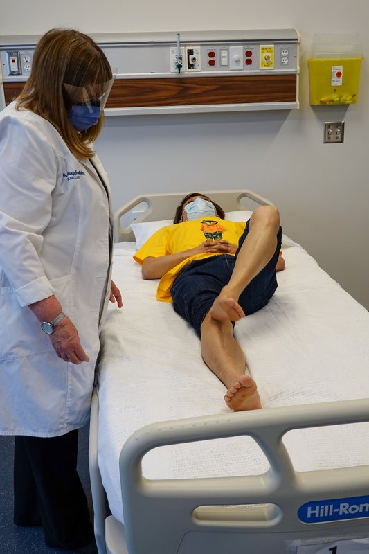
Steps
Patient lying down
Place one heel on the opposite knee
Slide it down the shin to the ankle, and back
Each side
Positive
Heel wobbles or falls off the shin (normal: smooth, stays on the shin)
Tap to reveal
Pearls
Remember
To say: "Finger-nose and heel-shin are smooth and accurate with no intention tremor; rapid alternating movements are normal in rate, rhythm and smoothness."
Tap to reveal
Gait and balance
PPES 2 · Weeks 8–9 · 2 manoeuvres
What to look for
Before the manoeuvres
Gait: watch the patient walk: posture, balance, arm swing, stride, turning
Tandem gait (heel to toe in a straight line): the most sensitive screen for ataxia (unsteady, poorly coordinated walking)
Walk on the heels (ankle dorsiflexion strength) and on the toes (plantar flexion strength)
Cerebellar gait: wide-based, staggering, swaying while standing; falls toward the side of a one-sided lesion
Reduced arm swing, small steps and a stooped posture suggest Parkinson disease
Perform and interpret Romberg's testlater: PoM 2 Neurology: balance needs two of three inputs (joint position sense, the vestibular system, vision); closing the eyes takes vision away
Tap to reveal
Walking
Tandem gait
Ataxia
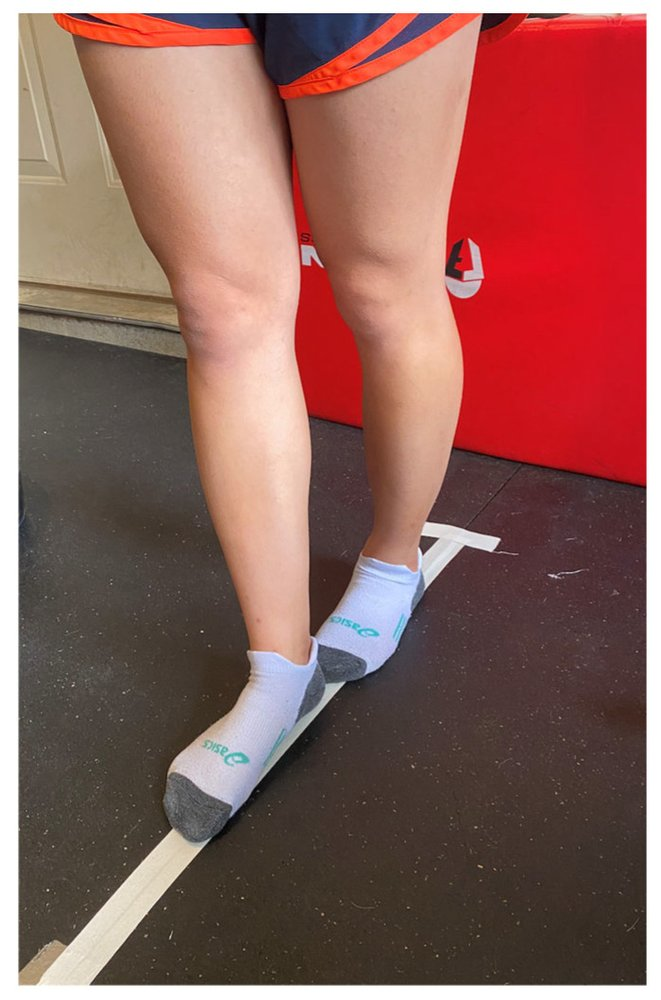
Steps
Walk in a straight line heel to toe
Stand close by
Positive
Cannot keep the line, steps off or sways (normal: steady)
Tap to reveal
Balance
Romberg test
Sensory ataxia (lost joint position sense) vs cerebellar ataxia later: PoM 2 Neurology
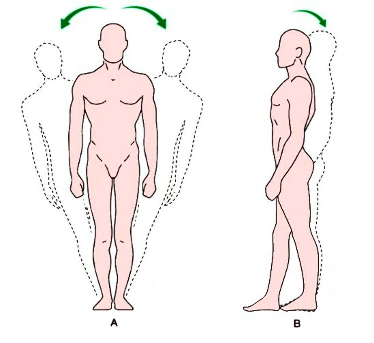
Steps
Patient stands with feet together, eyes open
Stand close to catch them
Patient closes the eyes (up to about 60 seconds)
Watch for swaying or falling
Positive
Steady with eyes open but sways or falls with eyes closed = positive Romberg = sensory ataxia (dorsal columns or nerves: B12 deficiency, peripheral neuropathy) · unsteady even with eyes open = cerebellar ataxia (Romberg not positive) (normal: steady both ways)
Tap to reveal
Pearls
Remember
To say: "Gait is normal; tandem gait steady; heel and toe walking normal; Romberg negative."
Tap to reveal
Where is the lesion?
PoM 2 · Neurology block · 11 levels
What to look for
The approach
Explain and justify where the lesion is in the nervous system (the neuraxis)later: PoM 2 Neurology
Use the same three steps for every neurological problem:
offer a differential diagnosis from the description and the localization; localizing tells you which investigations to order
Ask four questions of your findings:
upper or lower motor neuron? (section 4) later: PoM 2 Neurology
what pattern of weakness? one side (pyramidal) · both legs or all four limbs · one root (myotomal) · one nerve · distal on both sides · proximal on both sides · eyes first
is sensation involved, and in what pattern? none · a sensory level · one dermatome · glove and stocking · crossed (face one side, body the other)
any cortical, brainstem or cerebellar signs? (sections 2, 3 and 7)
Work down the neuraxis: brain → brainstem → spinal cord → anterior horn cell → nerve root → plexus → nerve → neuromuscular junction → muscle
The tempo predicts the type of lesion: hyperacute = ischemic stroke or hemorrhage · acute = trauma · subacute = inflammation or infection · subacute to chronic = tumour
Any one cortical sign puts it in the cortex · e.g. left middle cerebral artery (MCA) stroke: right face and arm weaker than leg, plus expressive aphasia
Tap to reveal
Subcortex (white matter, internal capsule)
One side, face, arm and leg alike
Steps
Upper motor neuron signs on one side
No cortical signs
Is it pure motor, pure sensory, or mild weakness with mild clumsiness on the same side?
Positive
Pure motor or pure sensory hemibody, or ataxic hemiparesis, with no cortical signs · internal capsule: motor and sensory together
Tap to reveal
Brainstem
Upper motor neuron weakness plus cranial nerve findings
Steps
Upper motor neuron signs
Vertigo, or double vision, plus another symptom
Is sensation crossed (face on one side, body on the other)?
Positive
Crossed signs, or cranial nerve findings with long-tract signs
Ataxia on the same side as the lesion, power normal · e.g. slurred speech plus right finger-nose ataxia → right cerebellum
Tap to reveal
Spinal cord
Spinal cord
Both legs (paraparesis) or all four limbs (quadriparesis), upper motor neuron
Steps
Upper motor neuron signs below the lesion: brisk reflexes, upgoing toes
Find a sensory level
Ask about bladder and bowel
Ask about neck or back pain
Positive
Upper motor neuron signs in both legs (or all four limbs) plus a sensory level · cervical cord → all four limbs, thoracic → legs · e.g. cervical spondylosis
Tap to reveal
Anterior horn cell
Weakness that varies, upper and lower motor neuron signs together
Steps
Wasting and fasciculations (lower motor neuron)
Brisk reflexes in the same limbs (upper motor neuron)
Test sensation
Positive
Both kinds of motor neuron signs, sensation normal · e.g. amyotrophic lateral sclerosis (ALS)
Tap to reveal
Peripheral (lower motor neuron)
Nerve root
One myotome, lower motor neuron
Steps
Weakness only in that root's muscles
That root's reflex reduced
Pinprick in that dermatome
Ask about neck or back pain shooting down the limb
Positive
Myotomal weakness, dermatomal sensory loss and the matching reflex reduced, with pain · e.g. disc herniation (radiculopathy)
Tap to reveal
Plexus
One limb, several nerves, lower motor neuron
Steps
Weakness across more than one nerve and root in one limb
Sensory loss in that limb
Ask about pain
Positive
One limb, more than one nerve, usually painful · e.g. brachial neuritis
Tap to reveal
Peripheral nerve
One nerve's muscles, or distal more than proximal on both sides
Steps
Weakness in one nerve's area, or feet before hands
Sensory loss in that nerve, or glove and stocking
Ankle reflexes
Positive
Single nerve, or length-dependent: feet first, glove-and-stocking loss, ankle jerks reduced or absent · e.g. Guillain-Barré syndrome (GBS)
Tap to reveal
Neuromuscular junction
Eyes first, then speech and swallowing; fluctuates
Steps
Droopy lids (ptosis), double vision
Does weakness worsen with use?
Test sensation and reflexes
Positive
Fatigable, descending weakness, eyes first, with normal sensation and reflexes · e.g. myasthenia gravis
Tap to reveal
Muscle
Proximal and symmetric: shoulder and hip girdle, neck, trunk
Steps
Trouble rising from a chair, climbing stairs, lifting the arms
Test sensation
Test reflexes
Positive
Proximal symmetric weakness, no sensory loss, reflexes often normal · e.g. dermatomyositis
Tap to reveal
Pearls
Remember
Upper vs lower motor neuron (the slide table): upper = no wasting, no fasciculations, brisk reflexes, spastic tone, upgoing toe, pyramidal pattern · lower = wasting, fasciculations possible (anterior horn cell, nerve), reflexes normal, reduced or absent, toe down, a pattern that fits the level
Both legs weak can come from a parasagittal brain lesion (e.g. a meningioma), the spinal cord, anterior horn cells, several lumbosacral roots (e.g. spinal stenosis), a polyneuropathy or muscle
Slurred speech: dysarthria or aphasia? Test comprehension, naming, repetition and fluency (section 2). All normal = dysarthria, an articulation problem, which can come from the cortex, subcortex, thalamus, brainstem, cerebellum, a nerve, the neuromuscular junction or muscle; what comes with it localizes
Middle cerebral artery (MCA) stroke: face and arm worse than leg · frontal → mostly motor · parietal → mostly sensory · internal capsule → both
Worked example (lecture case 1): sudden right facial droop, right arm much weaker than the leg, no speech but follows commands, no neglect → expressive aphasia with right face and arm weakness → left frontal lobe, left MCA territory; hyperacute → stroke or hemorrhage
⚠ New weakness with a sensory level, or bladder and bowel symptoms, points to the spinal cord and needs urgent assessment
To say: "Upper motor neuron signs in both legs with a sensory level at the umbilicus (T10) localize to the thoracic spinal cord."
Tap to reveal
Videos
Videos from the Health Education Media Library (Western Libraries; Clinical Neurological Sciences, Schulich School of Medicine and Dentistry), CC BY-NC 4.0, played from the library's own server. Each opens only when you tap it.
Image credits
Images reused under their open licences (Creative Commons or public domain). Some were cropped to hide faces.
CN II, optic: visual acuity: Clinical Neurological Sciences, Schulich School of Medicine and Dentistry (Health Education Media Library, Western Libraries), CC BY-NC 4.0, source
CN II: visual fields by confrontation: Clinical Neurological Sciences, Schulich School of Medicine and Dentistry (Health Education Media Library, Western Libraries), CC BY-NC 4.0, source
CN II and III: pupillary light reflex: Clinical Neurological Sciences, Schulich School of Medicine and Dentistry (Health Education Media Library, Western Libraries), CC BY-NC 4.0, source
CN III, IV, VI: eye movements: Clinical Neurological Sciences, Schulich School of Medicine and Dentistry (Health Education Media Library, Western Libraries), CC BY-NC 4.0, source
CN V, trigeminal: sensation: Clinical Neurological Sciences, Schulich School of Medicine and Dentistry (Health Education Media Library, Western Libraries), CC BY-NC 4.0, source
CN VII, facial: motor: Clinical Neurological Sciences, Schulich School of Medicine and Dentistry (Health Education Media Library, Western Libraries), CC BY-NC 4.0, source
CN IX and X: palate: Clinical Neurological Sciences, Schulich School of Medicine and Dentistry (Health Education Media Library, Western Libraries), CC BY-NC 4.0, source
CN XI, spinal accessory: Clinical Neurological Sciences, Schulich School of Medicine and Dentistry (Health Education Media Library, Western Libraries), CC BY-NC 4.0, source
CN XII, hypoglossal: Clinical Neurological Sciences, Schulich School of Medicine and Dentistry (Health Education Media Library, Western Libraries), CC BY-NC 4.0, source
Shoulder abduction: Clinical Neurological Sciences, Schulich School of Medicine and Dentistry (Health Education Media Library, Western Libraries), CC BY-NC 4.0, source
Elbow flexion: Clinical Neurological Sciences, Schulich School of Medicine and Dentistry (Health Education Media Library, Western Libraries), CC BY-NC 4.0, source
Elbow extension: Clinical Neurological Sciences, Schulich School of Medicine and Dentistry (Health Education Media Library, Western Libraries), CC BY-NC 4.0, source
Finger abduction: Clinical Neurological Sciences, Schulich School of Medicine and Dentistry (Health Education Media Library, Western Libraries), CC BY-NC 4.0, source
Hip flexion: Clinical Neurological Sciences, Schulich School of Medicine and Dentistry (Health Education Media Library, Western Libraries), CC BY-NC 4.0, source
Knee extension: Clinical Neurological Sciences, Schulich School of Medicine and Dentistry (Health Education Media Library, Western Libraries), CC BY-NC 4.0, source
Knee flexion: Clinical Neurological Sciences, Schulich School of Medicine and Dentistry (Health Education Media Library, Western Libraries), CC BY-NC 4.0, source
Ankle dorsiflexion: Clinical Neurological Sciences, Schulich School of Medicine and Dentistry (Health Education Media Library, Western Libraries), CC BY-NC 4.0, source
Ankle plantar flexion: Clinical Neurological Sciences, Schulich School of Medicine and Dentistry (Health Education Media Library, Western Libraries), CC BY-NC 4.0, source
Pain (pinprick): Clinical Neurological Sciences, Schulich School of Medicine and Dentistry (Health Education Media Library, Western Libraries), CC BY-NC 4.0, source
Vibration: Clinical Neurological Sciences, Schulich School of Medicine and Dentistry (Health Education Media Library, Western Libraries), CC BY-NC 4.0, source
Proprioception (joint position): Clinical Neurological Sciences, Schulich School of Medicine and Dentistry (Health Education Media Library, Western Libraries), CC BY-NC 4.0, source
Biceps: Clinical Neurological Sciences, Schulich School of Medicine and Dentistry (Health Education Media Library, Western Libraries), CC BY-NC 4.0, source
Brachioradialis: Clinical Neurological Sciences, Schulich School of Medicine and Dentistry (Health Education Media Library, Western Libraries), CC BY-NC 4.0, source
Triceps: Clinical Neurological Sciences, Schulich School of Medicine and Dentistry (Health Education Media Library, Western Libraries), CC BY-NC 4.0, source
Knee (patellar): Clinical Neurological Sciences, Schulich School of Medicine and Dentistry (Health Education Media Library, Western Libraries), CC BY-NC 4.0, source
Ankle (Achilles): Clinical Neurological Sciences, Schulich School of Medicine and Dentistry (Health Education Media Library, Western Libraries), CC BY-NC 4.0, source
Plantar response: Clinical Neurological Sciences, Schulich School of Medicine and Dentistry (Health Education Media Library, Western Libraries), CC BY-NC 4.0, source
Rapid alternating movements: Clinical Neurological Sciences, Schulich School of Medicine and Dentistry (Health Education Media Library, Western Libraries), CC BY-NC 4.0, source
Finger-nose: Clinical Neurological Sciences, Schulich School of Medicine and Dentistry (Health Education Media Library, Western Libraries), CC BY-NC 4.0, source
Heel-shin: Clinical Neurological Sciences, Schulich School of Medicine and Dentistry (Health Education Media Library, Western Libraries), CC BY-NC 4.0, source
CN I, olfactory: smell: Kosmider (Wikimedia Commons), Public domain (cropped, date stamp removed, lower face blurred), source
CN II: fundoscopy: Shiokawa A, Monteiro MLR, Massuda R, et al., Clinics (Sao Paulo) 2026, Fig. 2B, CC BY 4.0 (cropped to panel B, examiner's face and name badge blurred; patient's eyes barred in the original), source
CN VIII, vestibulocochlear: hearing: Ziyun518 (Wikimedia Commons), CC0 (two drawings placed side by side), source
Tandem gait: Wahlquist VE, Buckley TA, Caccese JB, Glutting JJ, Royer TD, Kaminski TW, Sports (Basel) 2024, Fig. 4, CC BY 4.0 (resized), source
Romberg test: Caricato F, Noto AM, Sanzone E, Donati P, Parchi PD, Cureus 2025, Fig. 2, CC BY 4.0 (resized), source
Where is the lesion? diagram: Drawn for medwiki (own work), CC0, source
Language (aphasia screen): Clinical Neurological Sciences, Schulich School of Medicine and Dentistry (Health Education Media Library, Western Libraries), CC BY-NC 4.0, source
Pronator drift: Clinical Neurological Sciences, Schulich School of Medicine and Dentistry (Health Education Media Library, Western Libraries), CC BY-NC 4.0, source
Wrist extension: Clinical Neurological Sciences, Schulich School of Medicine and Dentistry (Health Education Media Library, Western Libraries), CC BY-NC 4.0, source
Extinction (both sides at once): Clinical Neurological Sciences, Schulich School of Medicine and Dentistry (Health Education Media Library, Western Libraries), CC BY-NC 4.0, source
CN II: swinging light test: Clinical Neurological Sciences, Schulich School of Medicine and Dentistry (Health Education Media Library, Western Libraries), CC BY-NC 4.0 (frame from video), source
CN V and VII: corneal reflex: Drawn for this page (medwiki), CC0, source